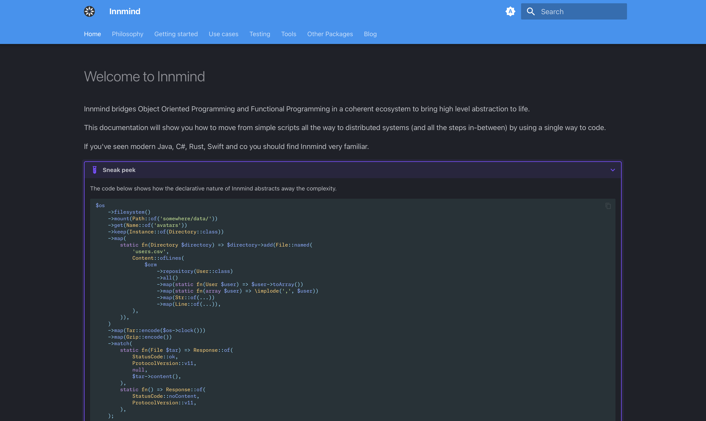

Slides
Archiver efficacement de grands volumes de données grâce aux monades¶
[.list: alignment(left)]
- Baptiste Langlade
- Lyon
- 10+ ans XP
- ~100 packages Open Source
GED¶
^ on premise => interventions difficiles
[.list: alignment(left)]
- Documents
- Métadonnées
- 1..N binaires
^ utiliser la carte d'identité pour expliquer les N versions
Archivage¶
^ archivage définies par métadonnées, sur plusieurs années/décennies
[.list: alignment(left)]
- Archive
- CSV des documents
- Dossiers contenant les binaires
^ en 1 seul fichier
Contraintes¶
^ taille archive, intervention impossible
Comment on fait ?¶
Streaming de données¶
[.code-highlight: 1] [.code-highlight: 2] [.code-highlight: 3] [.code-highlight: 4]
[.code-highlight: 1-8] [.code-highlight: 6]
/** @var \Generator<string> */
$stream = function(): \Generator {
$file = \fopen('names.txt', 'r');
while ($line = \fgets($file)) {
yield $line;
}
};
[.code-highlight: 1] [.code-highlight: 2] [.code-highlight: 3] [.code-highlight: 4]
^ important avoir une seule variable en mémoire
/**
* @param callable(): \Generator<string> $stream
* @var \Generator<string>
*/
$trim = function(callable $stream): \Generator {
foreach ($stream() as $line) {
yield \rtrim($line, "\n");
}
};
[.code-highlight: 7]
/**
* @param callable(): \Generator<string> $stream
* @var \Generator<string>
*/
$trim = function(callable $stream): \Generator {
foreach ($stream() as $line) {
yield \rtrim($line, "\n");
}
};
Monades¶
use Innmind\Immutable\Sequence;
/** @var Sequence<string> */
$stream = Sequence::lazy(function() {
$file = \fopen('names.txt', 'r');
while ($line = \fgets($file)) {
yield $line;
}
});
[.code-highlight: 1-2] [.code-highlight: 3-5]
/** @var Sequence<string> */
$trimmed = $stream->map(fn(string $line) => \rtrim($line, "\n"));
$trimmed->foreach(function(string $line) {
echo $line.",\n";
});
->map() |
->flatMap() |
->add() |
->append() |
->filter() |
->aggregate() |
->zip() |
etc... |
^ pause
Style monadique¶
^ le jeu est de tout représenter via des Sequence
[.list: alignment(left)]
Cas d'usage¶
- SQL
- Filesystem
SQL¶
ORM¶
/** @var Sequence<Document> */
$documents = $orm
->repository(Document::class)
->all()
->sequence();
Fichier¶
final class File
{
public function __construct(
private string $name,
/** @var Sequence<string> */
private Sequence $content,
) {}
}
Dossier¶
final class Directory
{
public function __construct(
private string $name,
/** @var Sequence<File|Directory> */
private Sequence $content,
) {}
}
use Innmind\Filesystem\File;
use Innmind\Filesystem\File\Content;
use Innmind\Immutable\Sequence;
use Innmind\Immutable\Str;
$file = File::named(
'data.csv',
Content::ofChunks(
Sequence::lazy(fn() => yield from [
"line, 1\n",
"line, 2\n",
"etc...",
]),
),
);
use Innmind\Filesystem\Directory;
$directory = Directory::named(
'files',
Sequence::lazy(fn() => yield from [
File::named('something', $content),
Directory::named(...$args),
// etc...
]),
);
^ pause
[.list: alignment(left)]
Cas d'usage¶
- Archive
- CSV des documents
- Dossiers contenant les binaires
[.code-highlight: 1] [.code-highlight: 2] [.code-highlight: 3-9] [.code-highlight: 8] [.code-highlight: 1-10]
$csv = File::named(
'documents.csv',
Content::ofChunks(
$orm
->repository(Document::class)
->all()
->sequence()
->map(fn(Document $document): string => $document->toCsvLine()),
),
);
[.code-highlight: 6-12] [.code-highlight: 7] [.code-highlight: 8] [.code-highlight: 9] [.code-highlight: 6]
use Innmind\Filesystem\Adapter\Filesystem;
use Innmind\Filesystem\Name;
use Innmind\Url\Path;
use Innmind\Immutable\Predicate\Instance;
$fetch = function(Document $document): Directory {
return Filesystem::mount(Path::of('var/data/'))
->get(Name::of($document->id()->toString()))
->keep(Instance::of(Directory::class));
};
$binaires = Directory::named(
'binaires',
$orm
->repository(Document::class)
->all()
->sequence()
->map($fetch),
);
Tar¶
[.code-highlight: 1-3] [.code-highlight: 4-5] [.code-highlight: 6-7]
[.code-highlight: 1-3] [.code-highlight: 7-8]
use Innmind\Encoding\Tar;
$tar = Tar::encode();
$archive = Directory::named(...$args);
/** @var \Innmind\Filesystem\File\Content */
$archive = $tar($archive);
$documents = fetchDocuments($orm);
$archive = Directory::named(
'archive',
Sequence::lazy(fn() => yield from [
toCsv($documents),
binaires($documents),
]),
);
$archive = $tar($archive);
^ aucun traitement effectué pour l'instant
use Symfony\Component\HttpFoundation\StreamedResponse;
new StreamedResponse(
fn() => $archive
->chunks()
->foreach(function(string $chunk) {
echo $chunk;
\flush();
});
);
[.code-highlight: 1] [.code-highlight: 2] [.code-highlight: 3] [.code-highlight: 4] [.code-highlight: 5] [.code-highlight: 6] [.code-highlight: 7] [.code-highlight: 8-9]
archive/documents.csv
document 1, métadonnée, etc...
document 2, métadonnée, etc...
archive/binaires/uuid-document-1/v1.bin
binaire chunk 1
binaire chunk 2
etc...
archive/binaires/uuid-document-2/v1.bin
binaire
Demo¶
[.list: alignment(left)]
Statistiques¶
- 100k documents
- ~80Go
- ~45 minutes
- ~45Mo/s
- ~40Mo de RAM
- ~100 lignes de code
Stateless¶

https://innmind.org¶

Questions¶
X/Bluesky/Mastodon @Baptouuuu